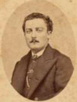
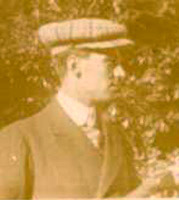

Árvore genealógica de Giovanni Battista Zaniratti, progenitor do ramo das regiões Toscana e Lazio.
Clique no nome que você procura para ir até a sua página pessoal.
[imagem histórica não recuperada: ../Foto/AlbGiobat.gif]
As fotografias abaixo reproduzidas são de algumas pessoas deste grupo familiar. No entanto, não sabemos associar os rostos aos nomes.
Todas as fotos foram tiradas em Ferrara.
[imagem histórica não recuperada: ../Foto/Ferrara4.jpg]
[imagem histórica não recuperada: ../Foto/Ferrara1.jpg]

[imagem histórica não recuperada: ../Foto/Ferrara3.jpg]
31.03.2005 Página inicial